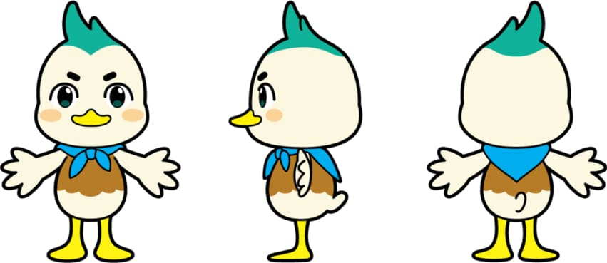
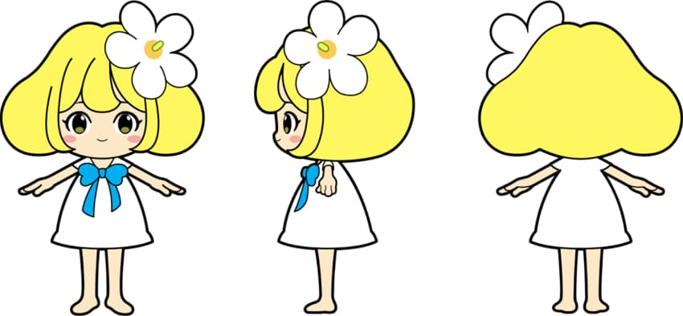
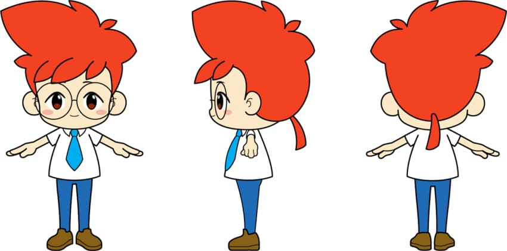

“아시아 최고의 문화 콘텐츠 라이선싱 쇼!!”
캐릭터 라이선싱 페어
캐릭터 라이선싱 페어는 라이선싱 관련 국내외 제조사, 에이전트, 유통 구매 담당자, 마케터, 홍보담당자를 초청, 실질적인 바이어와 매칭 프로그램을 운영하여,
참가사에 효율적인 비즈니스 환경을 제공합니다. 또한 다양한 퍼블릭 이벤트 진행을 통하여 일반 참관객의 이목을 집중시키고, 고객의 반응을 현장에서
바로 테스트할 수 있는 최적의 장소가 될 것입니다.
마포구 창작 캐릭터 최종보고회 영상
1조 마롱 & 포잉
문정은 INFP 열정적인 중재자
성지수 INTP 논리적인 사색가
오승현 ISFP 호기심 많은 예술가
최현수 INFJ 선의의 옹호자
2조 마포버디즈
홍승혜 Product Designer
손수연 Service Manager
김영윤 Art director & PM
박지영 Art director
김진섭 Art director
3조 반디포리/마요/포요
Team 송예슬 곽나경 윤혜빈 안민주
4조 마둥 마리 마플
박혜민 team leader illustrator
강혜원 product manager editorial designer
양대복 character designer
5조 마푸&포푸
Mapoo & Popoo Character
Team 정혜인 이민주

마롱
“행복을 전할때 심장 박동이 올라가는 따뜻한 마음
을 지니고 있는 요정”
마포의 문화, 사람들과 어우러져 홍대 거리에서 종종
연주를 합니다.

포잉
“다양한 사람들을 마포로 모이게하는 친절한 요정”
작지만 편견없는 단단한 마음을 가졌습니다.
상암공원에서 퐁퐁 뛰어다니며 즐거움을 줍니다.
응용동작
버스킹
함께
최고

엠블럼
마포 버디즈의 행동대장 브래드 M
“브래드 사전엔 포기란없다”
매사에 열정이 넘치는 고양이 한번 시작한 것들은
끝까지 마무리를 지며 불의를 보면 참지 못하고
바로 잡아야하는 정의의 사도.
마포 버디즈의 파워인싸 버니니
“버니니는 긍정의 아이콘”
친화력이 좋아 누구든지 친구 가능!
하루라도 집을 안나가면 몸이 근질근질한 파워 인싸
수다와 맛집 탐방이 인생의 낙이다.
마포 버디즈의 야망랩퍼 MC 쿠니
“쿠니는 랩퍼 준비중...”
수줍음이 많지만 은근히 관심 받는걸 좋아함
힙합을 좋아하며 언젠가 랩퍼로 데뷔하고 싶은 꿈을
마음속에 품고있다. 현재 몰래 맹연습중!
마포 버디즈의 해결사 동근이
“동근이는 다 계획이 있어”
항상 포커페이스를 유지. AI설이 돌 정도로 침착하다.
위기의 순간에 항상 묘안을 내놓는 비상한 두뇌 보유!
먹는 걸 좋아해 무럭무럭 옆으로 성장중이다.

반디포리
“잠들어있는 씨앗들아 내가 곧 찾으러 갈게~!”
어둡고 냄새나던 난지도가 깨끗하고 밝은 생명의 땅
으로 거듭나면서 태어난 반디포리.
마요
“문화예술이 가득한 마포에 산다는건 행복한 일이야!!”
반디포리의 따뜻한 불빛에 깨어난 마요.
포요
“마포구의 소식은 내가 책임진다!!”
반디포리의 따듯한 불빛에 깨어난 포요
포요는 호기심이 많은 성격으로 연구하고
도전하는것을 좋아합니다.
이모티콘

마둥 (Madung)
나이 2020년 5월 1일
거주 마포구 성산동 홍제천
신장 50cm 체중 1kg
MBTI ENFP
역할 청년홍보대사
마포구 ‘젊음’ 상징

마리 (Mari)
나이 2020년 4월 5일
거주 마포구 동교동 경의선숲길
신장 15cm 체중 0.2kg
MBTI ISFP
역할 자연홍보대사
마포구 ‘자연’ 상징
마플 (Maple)
나이 2000년 12월 1일생
거주 마포구 상암동 매봉산
신장 12cm 체중 0.1kg
MBTI ESTJ
역할 문화홍보대사
마포구 ‘문화’ 상징
캐릭터 설정 청둥오리
캐릭터 설정 목련
캐릭터 설정 단풍

마푸
“마포의 한강을 품고 태어나게 된 마포의 마스코트”
캐릭터 배의 곡선 문양은 마포의 한강물을
머리의 뿔은 지성을 상징한다.
포푸
“마푸의 쌍둥이”
잠들어있는 사람들의 마음에 치유를 준다.
호기심이 가득한 성격을 가지고 있고
사람들을 기뻐하게 하는 능력을 가졌다.